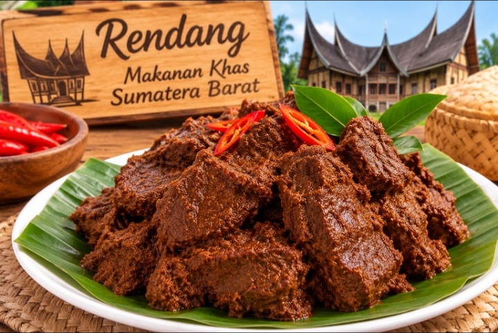
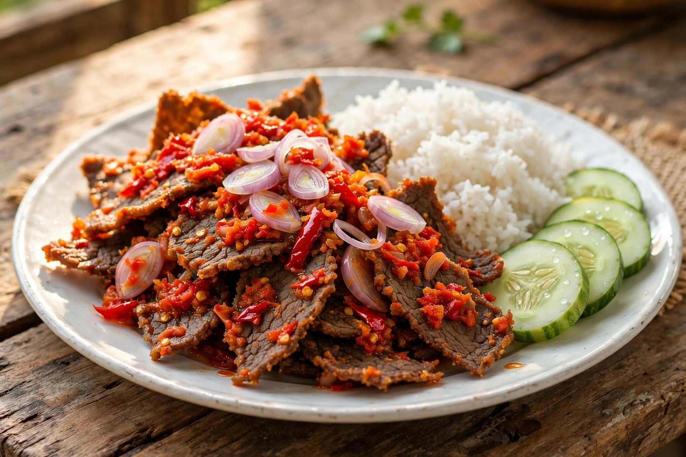
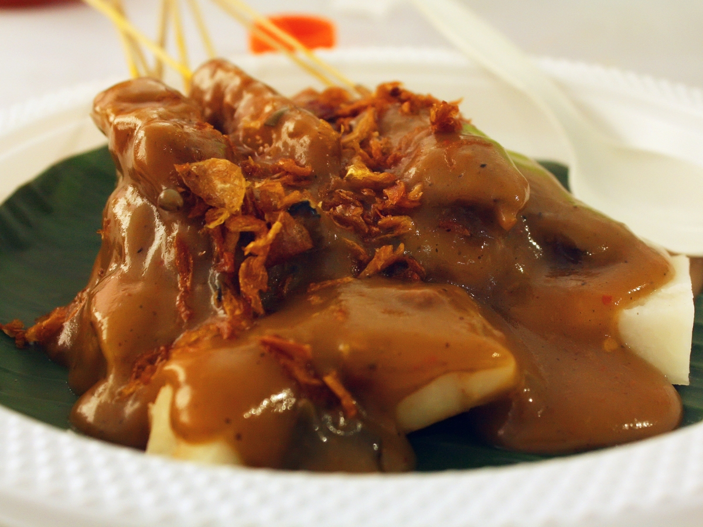
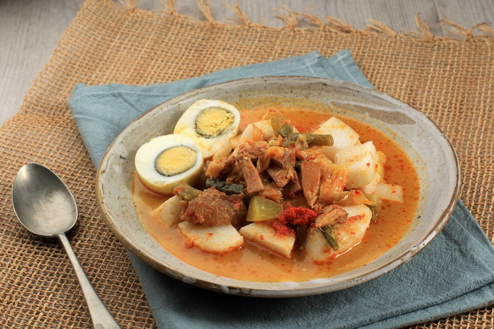
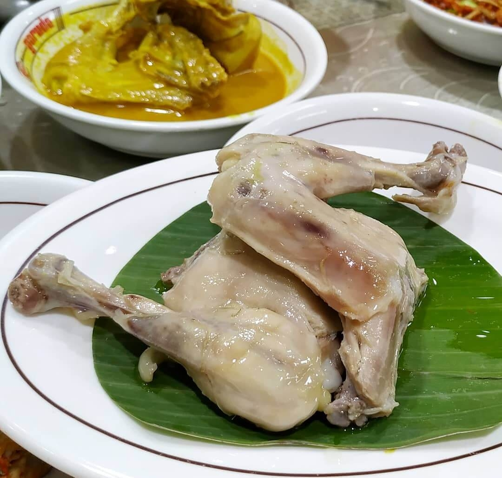

Rendang

Rendang adalah makanan khas Sumatera Barat yang berasal dari budaya Minangkabau, terbuat dari daging sapi yang dimasak menggunakan santan dan berbagai rempah-rempah, memiliki cita rasa gurih dan pedas, berwarna cokelat kehitaman, dimasak dalam waktu cukup lama, serta sering disajikan dalam acara adat dan hari raya. Rendang juga dikenal sebagai salah satu makanan Indonesia yang terkenal di dunia.
n
Dendeng

Dendeng balado adalah makanan khas Sumatera Barat yang berasal dari daerah Minangkabau, terbuat dari daging sapi yang diiris tipis kemudian digoreng hingga kering dan disajikan dengan sambal cabai merah, memiliki rasa gurih, pedas, dan sedikit asin, berwarna merah, biasanya dimakan bersama nasi putih, serta sangat terkenal dan disukai banyak orang.
Sate

Sate Padang adalah makanan khas Sumatera Barat yang berasal dari Minangkabau, terbuat dari potongan daging sapi yang ditusuk menggunakan lidi, kemudian dibakar dan disajikan dengan kuah kental berbumbu rempah-rempah berwarna kuning atau kemerahan, memiliki rasa gurih dan pedas, serta biasanya dinikmati bersama ketupat dan kerupuk kulit.
Lontong

Lontong adalah makanan tradisional Indonesia yang terbuat dari beras, dibungkus menggunakan daun pisang, berbentuk panjang, bertekstur padat, memiliki rasa gurih dan lezat, dimasak dengan cara direbus, serta biasanya disajikan bersama sayur, opor, kuah santan, dan sambal sebagai menu sarapan yang banyak disukai masyarakat
Ayam pop

Ayam pop adalah makanan khas Sumatera Barat yang berasal dari Minangkabau, menggunakan daging ayam sebagai bahan utama, memiliki warna putih pucat, tekstur daging yang lembut, dimasak dengan bumbu rempah khas, direbus lalu digoreng sebentar, memiliki rasa gurih dan lezat, serta biasanya disajikan bersama sambal merah dan disukai banyak orang.
<